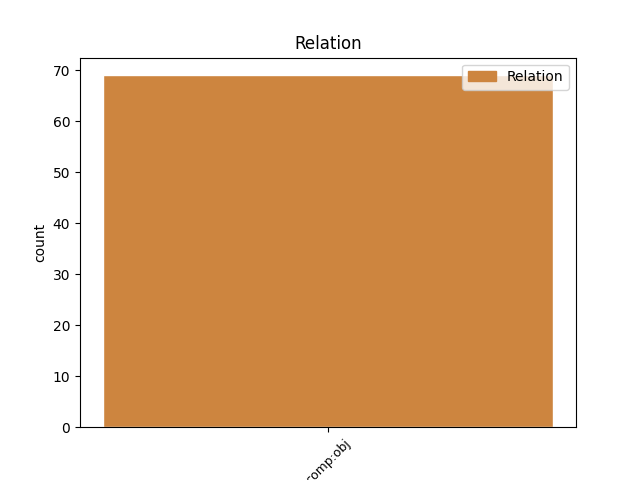
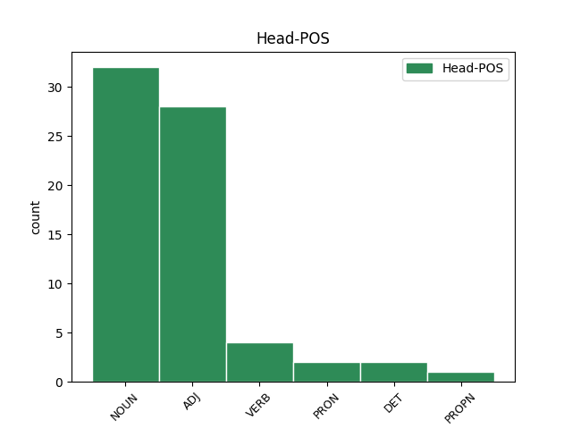
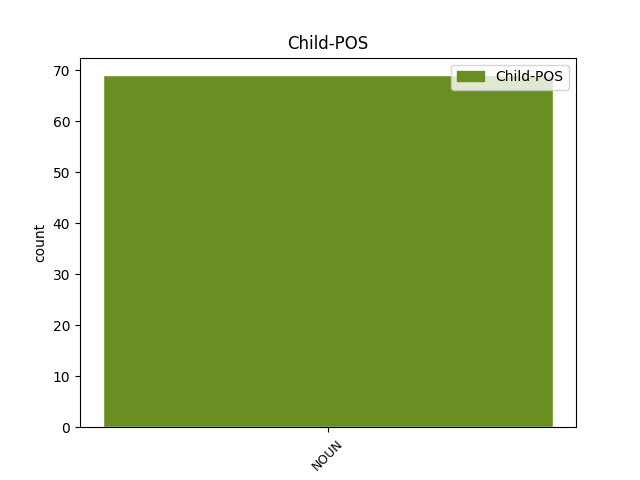

Distribution of features within this leaf



Agreement Rules sorted by frequency.
- When the dependent token is the direct object complements(comp:obj) of the head token, and the head token is ADJ and the dependent token is NOUN.
1 Care _ _ _ _ 0 _ _ _
2 va _ _ _ _ 0 _ _ _
3 omorî _ _ _ _ 0 _ _ _
4 dobitocul _ _ _ _ 0 _ _ _
5 altuia _ _ _ _ 0 _ _ _
6 , _ _ _ _ 0 _ _ _
7 iaste _ _ _ _ 0 _ _ _
8 datoriu dator ADJ Afpmsrn Case=Acc,Nom|Definite=Ind|Degree=Pos|Gender=Masc|Number=Sing 0 _ _ _
9 prețul preț NOUN Ncmsry Case=Acc,Nom|Definite=Def|Gender=Masc|Number=Sing 8 comp:obj _ ref=PART_V_CAP_11.4
10 acelui _ _ _ _ 0 _ _ _
11 dobitoc _ _ _ _ 0 _ _ _
12 . _ _ _ _ 0 _ _ _
1 Iară _ _ _ _ 0 _ _ _
2 cînd _ _ _ _ 0 _ _ _
3 să _ _ _ _ 0 _ _ _
4 va _ _ _ _ 0 _ _ _
5 desface _ _ _ _ 0 _ _ _
6 căsătoria _ _ _ _ 0 _ _ _
7 din _ _ _ _ 0 _ _ _
8 pricină _ _ _ _ 0 _ _ _
9 că _ _ _ _ 0 _ _ _
10 bărbatul _ _ _ _ 0 _ _ _
11 au _ _ _ _ 0 _ _ _
12 cugetat _ _ _ _ 0 _ _ _
13 rău _ _ _ _ 0 _ _ _
14 , _ _ _ _ 0 _ _ _
15 împotriva _ _ _ _ 0 _ _ _
16 vieții _ _ _ _ 0 _ _ _
17 muerii _ _ _ _ 0 _ _ _
18 , _ _ _ _ 0 _ _ _
19 atunci _ _ _ _ 0 _ _ _
20 să _ _ _ _ 0 _ _ _
21 -i _ _ _ _ 0 _ _ _
22 răspunză răspunză NOUN Ncfsrn Case=Acc,Nom|Definite=Ind|Gender=Fem|Number=Sing 0 _ _ _
23 zestrea zestre NOUN Ncfsry Case=Acc,Nom|Definite=Def|Gender=Fem|Number=Sing 22 comp:obj _ ref=PART_III_CAP_16b.42b
24 întreagă _ _ _ _ 0 _ _ _
25 după _ _ _ _ 0 _ _ _
26 cum _ _ _ _ 0 _ _ _
27 la _ _ _ _ 0 _ _ _
28 ( _ _ _ _ 0 _ _ _
29 41 _ _ _ _ 0 _ _ _
30 ) _ _ _ _ 0 _ _ _
31 și _ _ _ _ 0 _ _ _
32 prețul _ _ _ _ 0 _ _ _
33 zestrii _ _ _ _ 0 _ _ _
34 pre _ _ _ _ 0 _ _ _
35 jumătate _ _ _ _ 0 _ _ _
36 , _ _ _ _ 0 _ _ _
37 și _ _ _ _ 0 _ _ _
38 el _ _ _ _ 0 _ _ _
39 asemenea _ _ _ _ 0 _ _ _
40 să _ _ _ _ 0 _ _ _
41 să _ _ _ _ 0 _ _ _
42 închiză _ _ _ _ 0 _ _ _
43 în _ _ _ _ 0 _ _ _
44 Mănăstire _ _ _ _ 0 _ _ _
45 de _ _ _ _ 0 _ _ _
46 bărbați _ _ _ _ 0 _ _ _
47 . _ _ _ _ 0 _ _ _
1 Întru _ _ _ _ 0 _ _ _
2 fapte _ _ _ _ 0 _ _ _
3 bune _ _ _ _ 0 _ _ _
4 avînd _ _ _ _ 0 _ _ _
5 mărturii _ _ _ _ 0 _ _ _
6 cuviioase _ _ _ _ 0 _ _ _
7 , _ _ _ _ 0 _ _ _
8 să _ _ _ _ 0 _ _ _
9 va _ _ _ _ 0 _ _ _
10 fi _ _ _ _ 0 _ _ _
11 crescută crește VERB Vmp--sf-p--r Case=Acc,Nom|Gender=Fem|Number=Sing|Polarity=Pos|VerbForm=Part 0 _ _ _
12 feciori fecior NOUN Ncmprn Case=Acc,Nom|Definite=Ind|Gender=Masc|Number=Plur 11 comp:obj _ ref=PAVEL_TIM.1_5.10|SpaceAfter=No
13 , _ _ _ _ 0 _ _ _
14 au _ _ _ _ 0 _ _ _
15 pre _ _ _ _ 0 _ _ _
16 călători _ _ _ _ 0 _ _ _
17 ( _ _ _ _ 0 _ _ _
18 Au _ _ _ _ 0 _ _ _
19 surumani _ _ _ _ 0 _ _ _
20 ) _ _ _ _ 0 _ _ _
21 au _ _ _ _ 0 _ _ _
22 priimit _ _ _ _ 0 _ _ _
23 , _ _ _ _ 0 _ _ _
24 vare _ _ _ _ 0 _ _ _
25 de _ _ _ _ 0 _ _ _
26 au _ _ _ _ 0 _ _ _
27 spălat _ _ _ _ 0 _ _ _
28 picioarele _ _ _ _ 0 _ _ _
29 sfinților _ _ _ _ 0 _ _ _
30 , _ _ _ _ 0 _ _ _
31 vare _ _ _ _ 0 _ _ _
32 de _ _ _ _ 0 _ _ _
33 au _ _ _ _ 0 _ _ _
34 mîngîiat _ _ _ _ 0 _ _ _
35 pre _ _ _ _ 0 _ _ _
36 scîrbiți _ _ _ _ 0 _ _ _
37 , _ _ _ _ 0 _ _ _
38 au _ _ _ _ 0 _ _ _
39 de _ _ _ _ 0 _ _ _
40 au _ _ _ _ 0 _ _ _
41 îmblat _ _ _ _ 0 _ _ _
42 ( _ _ _ _ 0 _ _ _
43 s _ _ _ _ 0 _ _ _
44 -au _ _ _ _ 0 _ _ _
45 ținut _ _ _ _ 0 _ _ _
46 ) _ _ _ _ 0 _ _ _
47 după _ _ _ _ 0 _ _ _
48 tot _ _ _ _ 0 _ _ _
49 lucrul _ _ _ _ 0 _ _ _
50 bun _ _ _ _ 0 _ _ _
51 . _ _ _ _ 0 _ _ _
1 Alexandru _ _ _ _ 0 _ _ _
2 dzise _ _ _ _ 0 _ _ _
3 : _ _ _ _ 0 _ _ _
4 " _ _ _ _ 0 _ _ _
5 Cine _ _ _ _ 0 _ _ _
6 ai al DET Tsmpr Case=Acc,Nom|Gender=Masc|Number=Plur|Poss=Yes|PronType=Art 0 _ _ _
7 priiatnic priatnic NOUN Ncmsrn Case=Acc,Nom|Definite=Ind|Gender=Masc|Number=Sing 6 comp:obj _ _
8 de _ _ _ _ 0 _ _ _
9 credință _ _ _ _ 0 _ _ _
10 , _ _ _ _ 0 _ _ _
11 nu _ _ _ _ 0 _ _ _
12 avea _ _ _ _ 0 _ _ _
13 băsău _ _ _ _ 0 _ _ _
14 spr- _ _ _ _ 0 _ _ _
15 însul _ _ _ _ 0 _ _ _
16 . _ _ _ _ 0 _ _ _
1 Am _ _ _ _ 0 _ _ _
2 văzut _ _ _ _ 0 _ _ _
3 -o _ _ _ _ 0 _ _ _
4 la _ _ _ _ 0 _ _ _
5 fântână _ _ _ _ 0 _ _ _
6 , _ _ _ _ 0 _ _ _
7 Cu _ _ _ _ 0 _ _ _
8 doi _ _ _ _ 0 _ _ _
9 copilași _ _ _ _ 0 _ _ _
10 de _ _ _ _ 0 _ _ _
11 mână _ _ _ _ 0 _ _ _
12 , _ _ _ _ 0 _ _ _
13 Scotea scoate PROPN Npfsry Case=Acc,Nom|Definite=Def|Gender=Fem|Number=Sing 0 _ _ _
14 apă apă NOUN Ncfsrn Case=Acc,Nom|Definite=Ind|Gender=Fem|Number=Sing 13 comp:obj _ _
15 și _ _ _ _ 0 _ _ _
16 plângea _ _ _ _ 0 _ _ _
17 , _ _ _ _ 0 _ _ _
18 Copilașii _ _ _ _ 0 _ _ _
19 o _ _ _ _ 0 _ _ _
20 -ntreba _ _ _ _ 0 _ _ _
21 : _ _ _ _ 0 _ _ _
22 De _ _ _ _ 0 _ _ _
23 ce _ _ _ _ 0 _ _ _
24 plângi _ _ _ _ 0 _ _ _
25 , _ _ _ _ 0 _ _ _
26 mămica _ _ _ _ 0 _ _ _
27 mea _ _ _ _ 0 _ _ _
28 ? _ _ _ _ 0 _ _ _
Disagree Examples:
1 Atunci _ _ _ _ 0 _ _ _
2 Pilat _ _ _ _ 0 _ _ _
3 , _ _ _ _ 0 _ _ _
4 răspunzînd _ _ _ _ 0 _ _ _
5 , _ _ _ _ 0 _ _ _
6 iară _ _ _ _ 0 _ _ _
7 zise _ _ _ _ 0 _ _ _
8 lor _ _ _ _ 0 _ _ _
9 : _ _ _ _ 0 _ _ _
10 Dară _ _ _ _ 0 _ _ _
11 ce _ _ _ _ 0 _ _ _
12 veți _ _ _ _ 0 _ _ _
13 să _ _ _ _ 0 _ _ _
14 fac _ _ _ _ 0 _ _ _
15 Cestuia _ _ _ _ 0 _ _ _
16 ce _ _ _ _ 0 _ _ _
17 -I _ _ _ _ 0 _ _ _
18 ziceți _ _ _ _ 0 _ _ _
19 craiul crai NOUN Ncmsry Case=Acc,Nom|Definite=Def|Gender=Masc|Number=Sing 20 comp:obj _ ref=MARC15.12
20 jidovilor jidov NOUN Ncmpoy Case=Dat,Gen|Definite=Def|Gender=Masc|Number=Plur 0 _ _ _
21 ? _ _ _ _ 0 _ _ _
1 Roagă _ _ _ _ 0 _ _ _
2 -Să _ _ _ _ 0 _ _ _
3 Hristos _ _ _ _ 0 _ _ _
4 Tatălui _ _ _ _ 0 _ _ _
5 Său _ _ _ _ 0 _ _ _
6 să _ _ _ _ 0 _ _ _
7 -I _ _ _ _ 0 _ _ _
8 arate ara VERB Vmp--sf-p--o Case=Dat,Gen|Gender=Fem|Number=Sing|Polarity=Pos|VerbForm=Part 0 _ _ _
9 slava slavă NOUN Ncfsry Case=Acc,Nom|Definite=Def|Gender=Fem|Number=Sing 8 comp:obj _ ref=IOAN17.1.content
10 Sa _ _ _ _ 0 _ _ _
11 . _ _ _ _ 0 _ _ _
1 Scîrbă _ _ _ _ 0 _ _ _
2 și _ _ _ _ 0 _ _ _
3 strimteală _ _ _ _ 0 _ _ _
4 spre _ _ _ _ 0 _ _ _
5 tot _ _ _ _ 0 _ _ _
6 sufletul _ _ _ _ 0 _ _ _
7 omului _ _ _ _ 0 _ _ _
8 făcătoriului făcător ADJ Afpmsoy Case=Dat,Gen|Definite=Def|Degree=Pos|Gender=Masc|Number=Sing 0 _ _ _
9 rău rău NOUN Ncmsrn Case=Acc,Nom|Definite=Ind|Gender=Masc|Number=Sing 8 comp:obj _ ref=PAVEL_ROM.2.9|SpaceAfter=No
10 , _ _ _ _ 0 _ _ _
11 jidovului _ _ _ _ 0 _ _ _
12 mainte _ _ _ _ 0 _ _ _
13 și _ _ _ _ 0 _ _ _
14 grecului _ _ _ _ 0 _ _ _
15 . _ _ _ _ 0 _ _ _
1 Că _ _ _ _ 0 _ _ _
2 n- _ _ _ _ 0 _ _ _
3 ați _ _ _ _ 0 _ _ _
4 luat _ _ _ _ 0 _ _ _
5 duhul duh NOUN Ncmsry Case=Acc,Nom|Definite=Def|Gender=Masc|Number=Sing 6 comp:obj _ ref=PAVEL_ROM.8.15
6 slujiturii slujitură NOUN Ncfsoy Case=Dat,Gen|Definite=Def|Gender=Fem|Number=Sing 0 _ _ _
7 spre _ _ _ _ 0 _ _ _
8 teamere _ _ _ _ 0 _ _ _
9 , _ _ _ _ 0 _ _ _
10 ce _ _ _ _ 0 _ _ _
11 ați _ _ _ _ 0 _ _ _
12 luat _ _ _ _ 0 _ _ _
13 duhul _ _ _ _ 0 _ _ _
14 a _ _ _ _ 0 _ _ _
15 fiilor _ _ _ _ 0 _ _ _
16 , _ _ _ _ 0 _ _ _
17 pre _ _ _ _ 0 _ _ _
18 carele _ _ _ _ 0 _ _ _
19 strigăm _ _ _ _ 0 _ _ _
20 : _ _ _ _ 0 _ _ _
21 Avva _ _ _ _ 0 _ _ _
22 , _ _ _ _ 0 _ _ _
23 Părinte _ _ _ _ 0 _ _ _
24 . _ _ _ _ 0 _ _ _
1 Atunce _ _ _ _ 0 _ _ _
2 veni _ _ _ _ 0 _ _ _
3 alt _ _ _ _ 0 _ _ _
4 înger _ _ _ _ 0 _ _ _
5 și _ _ _ _ 0 _ _ _
6 stătu _ _ _ _ 0 _ _ _
7 înintea înintea NOUN Ncfsry Case=Acc,Nom|Definite=Def|Gender=Fem|Number=Sing 8 comp:obj _ ref=IOAN_APOC_8.3
8 oltariului altar NOUN Ncmsoy Case=Dat,Gen|Definite=Def|Gender=Masc|Number=Sing 0 _ _ _
9 , _ _ _ _ 0 _ _ _
10 avînd _ _ _ _ 0 _ _ _
11 cădelniță _ _ _ _ 0 _ _ _
12 de _ _ _ _ 0 _ _ _
13 aur _ _ _ _ 0 _ _ _
14 , _ _ _ _ 0 _ _ _
15 și _ _ _ _ 0 _ _ _
16 -i _ _ _ _ 0 _ _ _
17 fură _ _ _ _ 0 _ _ _
18 date _ _ _ _ 0 _ _ _
19 lui _ _ _ _ 0 _ _ _
20 mirodenii _ _ _ _ 0 _ _ _
21 multe _ _ _ _ 0 _ _ _
22 , _ _ _ _ 0 _ _ _
23 ca _ _ _ _ 0 _ _ _
24 să _ _ _ _ 0 _ _ _
25 le _ _ _ _ 0 _ _ _
26 jărtvească _ _ _ _ 0 _ _ _
27 cu _ _ _ _ 0 _ _ _
28 rugăciunea _ _ _ _ 0 _ _ _
29 a _ _ _ _ 0 _ _ _
30 toți _ _ _ _ 0 _ _ _
31 sfinții _ _ _ _ 0 _ _ _
32 , _ _ _ _ 0 _ _ _
33 spre _ _ _ _ 0 _ _ _
34 oltariul _ _ _ _ 0 _ _ _
35 cel _ _ _ _ 0 _ _ _
36 de _ _ _ _ 0 _ _ _
37 aur _ _ _ _ 0 _ _ _
38 , _ _ _ _ 0 _ _ _
39 carele _ _ _ _ 0 _ _ _
40 iaste _ _ _ _ 0 _ _ _
41 înaintea _ _ _ _ 0 _ _ _
42 scaunului _ _ _ _ 0 _ _ _
43 . _ _ _ _ 0 _ _ _